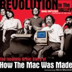

|  |
| About IR |
| Editors |
| Author instructions |
| Copyright |
| Author index |
| Subject index |
| Search |
| Reviews |
| Register |
| Home |
Hertzfeld, Andy Revolution in the Valley: the insanely great story of how the Mac was made. Sebastopol, CA: O'Reilly, 2004. xxiv, 291, [5] p. ISBN 0-596-00719-1 £16.95; $24.95
I've never had Mac, or any other variety of the Apple species, although I've occasionally used one and could never see it as a love object. However, some people do; they speak of the machine with a passion that they seem to reveal for little else. But a machine, even what is claimed to be a very user-friendly device, is only a machine, a tool for getting things done and if the Mac does it better, why do we have so many PCs? Of course, the Apple crew made a basic mistake in not allowing other manufacturers to produce the machine, while IBM opened up the world by freeing the production. Apple claimed to want to change the world, but IBM (and Microsoft) actually achieved that. It seems that the dream was a victim of the desire to control the cash flow.
Andy Hertzfeld is well placed to commentate upon the development of the MAC, since he joined the team in 1981 and was, as the blurb puts it, '...one of the main authors of the Macintosh system software...'. He went on work for himself, setting up other companies, stimulated it would seem by Steve Wozniak's attitude towards intellectual property—and money. Hertzfeld, Burrell Smith and Bill Budge figured out a way to give the Apple II a graphical user interface and were reluctant to show it to Wozniak, '...knowing he would want to commandeer it', but word leaked out, Wozniak insisted on seeing it and then, '...insisted that Apple owned all the rights to it, even though we had developed it in our own time and thought we should be compensated. But it was really hard to argue with Steve, especially about money.' Naturally, '...the whole episode whetted our appetites for eventually working on our own'.
The book is essentiall a series of stories, over a time-line from August 1979 to May 1985, with anecdotes, technical bits and pieces, lots of photographs and pages reproduced from Hertzfeld's notebooks. It is never boring, although, the technical bits can be mind-numbing for a non-programmer or someone who is not an electronic engineer; for example:
To synchronize with the video, Burrell had me write software to fill the Apple II's frame buffer so the low bit of each byte was on most of the time except at the end of the last scan line. I wrote a routine to sit in a tight loop and read the latch. When the low bit changed, we would know the vertical blanking interval had just begun.
Ye-e-e-e-s
Lots of characters parade through the book—and not only those connected with Apple, such as Steve Wozniak, Steve Jobs and John Sculley, but also other industry figures such as Adam Osborne, who suggested that the Osborne 1 would outsell the Apple II by a factor of 10 (got that one wrong, didn't he!); Bill Gates, accused by Jobs of ripping off the Apple interface for Windows, he replied: 'Well, Steve, I think there's more than one way of looking at it. I think it's more like we both had this rich neighbour named Xerox and I broke into his house to steal the TV set only to find that you had already stolen it'. (I think that's called 'chutzpah'); Mick Jagger and Alan Kay, author of what the author describes as, '...perhaps the most inspiring talk I ever attended'.
Herzfeld is currently developing Web-based software for collaborative story-telling and, in fact, the book was prepared with its aid. You can find a manifestation of it at www.folklore.org: follow it up, you'll find the comments on the stories nothing less than interesting and often amusing.
The closest thing I can recall to this book is Tracy Kidder's, The soul of a new machine , the story of the development of Data General's minicomputer, but Kidder was an outsider, looking in, Herzfeld is an insider telling, if not the whole truth, then a pretty good approximation.
Professor Tom Wilson
Editor-in-Chief
December, 2004
How to cite this review
Wilson, T.D. (2005). Review of: Hertzfeld, Andy Revolution in the Valley: the insanely great story of how the Mac was made. Sebastopol, CA: O'Reilly, 2004. Information Research, 10(2), review no. R156 [Available at: http://informationr.net/ir/reviews/revs156.html]